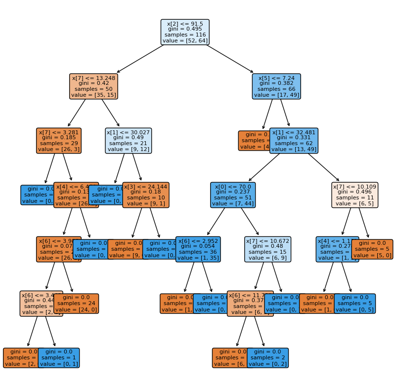

UTS#
Lakukan analisa terhadap data pada https://archive.ics.uci.edu/ml/datasets/Breast+Cancer+Coimbra dengan menggunakan klasifikasi
metode KNN
metode pohon keputusan (Desision tree)
1. KNN#
import numpy as np
import pandas as pd
import matplotlib.pyplot as plt
import seaborn as sns
from sklearn.preprocessing import LabelEncoder
from sklearn.preprocessing import StandardScaler
from sklearn.model_selection import train_test_split
from sklearn.neighbors import KNeighborsClassifier
from sklearn.metrics import classification_report
from sklearn.metrics import confusion_matrix
from sklearn.metrics import ConfusionMatrixDisplay
df = pd.read_csv('/content/drive/MyDrive/datamining/tugas/data/dataR2.csv')
df
| Age | BMI | Glucose | Insulin | HOMA | Leptin | Adiponectin | Resistin | MCP.1 | Classification | |
|---|---|---|---|---|---|---|---|---|---|---|
| 0 | 48 | 23.500000 | 70 | 2.707 | 0.467409 | 8.8071 | 9.702400 | 7.99585 | 417.114 | 1 |
| 1 | 83 | 20.690495 | 92 | 3.115 | 0.706897 | 8.8438 | 5.429285 | 4.06405 | 468.786 | 1 |
| 2 | 82 | 23.124670 | 91 | 4.498 | 1.009651 | 17.9393 | 22.432040 | 9.27715 | 554.697 | 1 |
| 3 | 68 | 21.367521 | 77 | 3.226 | 0.612725 | 9.8827 | 7.169560 | 12.76600 | 928.220 | 1 |
| 4 | 86 | 21.111111 | 92 | 3.549 | 0.805386 | 6.6994 | 4.819240 | 10.57635 | 773.920 | 1 |
| ... | ... | ... | ... | ... | ... | ... | ... | ... | ... | ... |
| 111 | 45 | 26.850000 | 92 | 3.330 | 0.755688 | 54.6800 | 12.100000 | 10.96000 | 268.230 | 2 |
| 112 | 62 | 26.840000 | 100 | 4.530 | 1.117400 | 12.4500 | 21.420000 | 7.32000 | 330.160 | 2 |
| 113 | 65 | 32.050000 | 97 | 5.730 | 1.370998 | 61.4800 | 22.540000 | 10.33000 | 314.050 | 2 |
| 114 | 72 | 25.590000 | 82 | 2.820 | 0.570392 | 24.9600 | 33.750000 | 3.27000 | 392.460 | 2 |
| 115 | 86 | 27.180000 | 138 | 19.910 | 6.777364 | 90.2800 | 14.110000 | 4.35000 | 90.090 | 2 |
116 rows × 10 columns
df.head()
| Age | BMI | Glucose | Insulin | HOMA | Leptin | Adiponectin | Resistin | MCP.1 | Classification | |
|---|---|---|---|---|---|---|---|---|---|---|
| 0 | 48 | 23.500000 | 70 | 2.707 | 0.467409 | 8.8071 | 9.702400 | 7.99585 | 417.114 | 1 |
| 1 | 83 | 20.690495 | 92 | 3.115 | 0.706897 | 8.8438 | 5.429285 | 4.06405 | 468.786 | 1 |
| 2 | 82 | 23.124670 | 91 | 4.498 | 1.009651 | 17.9393 | 22.432040 | 9.27715 | 554.697 | 1 |
| 3 | 68 | 21.367521 | 77 | 3.226 | 0.612725 | 9.8827 | 7.169560 | 12.76600 | 928.220 | 1 |
| 4 | 86 | 21.111111 | 92 | 3.549 | 0.805386 | 6.6994 | 4.819240 | 10.57635 | 773.920 | 1 |
df.shape
(116, 10)
#create a dataframe with all training data except the target column
X = df.drop(columns=['Classification'])
#check that the target variable has been removed
X.head()
| Age | BMI | Glucose | Insulin | HOMA | Leptin | Adiponectin | Resistin | MCP.1 | |
|---|---|---|---|---|---|---|---|---|---|
| 0 | 48 | 23.500000 | 70 | 2.707 | 0.467409 | 8.8071 | 9.702400 | 7.99585 | 417.114 |
| 1 | 83 | 20.690495 | 92 | 3.115 | 0.706897 | 8.8438 | 5.429285 | 4.06405 | 468.786 |
| 2 | 82 | 23.124670 | 91 | 4.498 | 1.009651 | 17.9393 | 22.432040 | 9.27715 | 554.697 |
| 3 | 68 | 21.367521 | 77 | 3.226 | 0.612725 | 9.8827 | 7.169560 | 12.76600 | 928.220 |
| 4 | 86 | 21.111111 | 92 | 3.549 | 0.805386 | 6.6994 | 4.819240 | 10.57635 | 773.920 |
#separate target values
y = df['Classification'].values
#view target values
y[0:5]
array([1, 1, 1, 1, 1])
from sklearn.model_selection import train_test_split
#split dataset into train and test data
X_train, X_test, y_train, y_test = train_test_split(X, y, test_size=0.2, random_state=1, stratify=y)
from sklearn.neighbors import KNeighborsClassifier
# Create KNN classifier
knn = KNeighborsClassifier(n_neighbors = 3)
# Fit the classifier to the data
knn.fit(X_train,y_train)
KNeighborsClassifier(n_neighbors=3)In a Jupyter environment, please rerun this cell to show the HTML representation or trust the notebook.
On GitHub, the HTML representation is unable to render, please try loading this page with nbviewer.org.
KNeighborsClassifier(n_neighbors=3)
#show first 5 model predictions on the test data
knn.predict(X_test)[0:5]
array([1, 2, 1, 2, 2])
#check accuracy of our model on the test data
knn.score(X_test, y_test)
0.3333333333333333
from sklearn.model_selection import cross_val_score
import numpy as np
#create a new KNN model
knn_cv = KNeighborsClassifier(n_neighbors=3)
#train model with cv of 5
cv_scores = cross_val_score(knn_cv, X, y, cv=5)
#print each cv score (accuracy) and average them
print(cv_scores)
print('cv_scores mean:{}'.format(np.mean(cv_scores)))
[0.5 0.52173913 0.47826087 0.47826087 0.60869565]
cv_scores mean:0.5173913043478261
from sklearn.model_selection import GridSearchCV
#create new a knn model
knn2 = KNeighborsClassifier()
#create a dictionary of all values we want to test for n_neighbors
param_grid = {'n_neighbors': np.arange(1, 25)}
#use gridsearch to test all values for n_neighbors
knn_gscv = GridSearchCV(knn2, param_grid, cv=5)
#fit model to data
knn_gscv.fit(X, y)
GridSearchCV(cv=5, estimator=KNeighborsClassifier(),
param_grid={'n_neighbors': array([ 1, 2, 3, 4, 5, 6, 7, 8, 9, 10, 11, 12, 13, 14, 15, 16, 17,
18, 19, 20, 21, 22, 23, 24])})In a Jupyter environment, please rerun this cell to show the HTML representation or trust the notebook. On GitHub, the HTML representation is unable to render, please try loading this page with nbviewer.org.
GridSearchCV(cv=5, estimator=KNeighborsClassifier(),
param_grid={'n_neighbors': array([ 1, 2, 3, 4, 5, 6, 7, 8, 9, 10, 11, 12, 13, 14, 15, 16, 17,
18, 19, 20, 21, 22, 23, 24])})KNeighborsClassifier()
KNeighborsClassifier()
#check top performing n_neighbors value
knn_gscv.best_params_
{'n_neighbors': 23}
#check mean score for the top performing value of n_neighbors
knn_gscv.best_score_
0.5688405797101449
# Calculating error for K values between 2 and 10
error = []
import matplotlib.pyplot as plt
for i in range(1, 10):
knn = KNeighborsClassifier(n_neighbors=i)
knn.fit(X_train, y_train)
pred_i = knn.predict(X_test)
error.append(np.mean(pred_i != y_test))
plt.figure(figsize=(12, 6))
plt.plot(range(1, 10), error, color='red', linestyle='dashed', marker='o',
markerfacecolor='blue', markersize=10)
plt.title('Error Rate K Value')
plt.xlabel('K Value')
plt.ylabel('Mean Error')
Text(0, 0.5, 'Mean Error')
2.Decision tree#
import numpy as np # linear algebra
import pandas as pd # data processing, CSV file I/O (e.g. pd.read_csv)
import matplotlib.pyplot as plt
from sklearn.metrics import accuracy_score
from sklearn import tree
import seaborn as sns
df = pd.read_csv('/content/drive/MyDrive/datamining/tugas/data/dataR2.csv')
df
| Age | BMI | Glucose | Insulin | HOMA | Leptin | Adiponectin | Resistin | MCP.1 | Classification | |
|---|---|---|---|---|---|---|---|---|---|---|
| 0 | 48 | 23.500000 | 70 | 2.707 | 0.467409 | 8.8071 | 9.702400 | 7.99585 | 417.114 | 1 |
| 1 | 83 | 20.690495 | 92 | 3.115 | 0.706897 | 8.8438 | 5.429285 | 4.06405 | 468.786 | 1 |
| 2 | 82 | 23.124670 | 91 | 4.498 | 1.009651 | 17.9393 | 22.432040 | 9.27715 | 554.697 | 1 |
| 3 | 68 | 21.367521 | 77 | 3.226 | 0.612725 | 9.8827 | 7.169560 | 12.76600 | 928.220 | 1 |
| 4 | 86 | 21.111111 | 92 | 3.549 | 0.805386 | 6.6994 | 4.819240 | 10.57635 | 773.920 | 1 |
| ... | ... | ... | ... | ... | ... | ... | ... | ... | ... | ... |
| 111 | 45 | 26.850000 | 92 | 3.330 | 0.755688 | 54.6800 | 12.100000 | 10.96000 | 268.230 | 2 |
| 112 | 62 | 26.840000 | 100 | 4.530 | 1.117400 | 12.4500 | 21.420000 | 7.32000 | 330.160 | 2 |
| 113 | 65 | 32.050000 | 97 | 5.730 | 1.370998 | 61.4800 | 22.540000 | 10.33000 | 314.050 | 2 |
| 114 | 72 | 25.590000 | 82 | 2.820 | 0.570392 | 24.9600 | 33.750000 | 3.27000 | 392.460 | 2 |
| 115 | 86 | 27.180000 | 138 | 19.910 | 6.777364 | 90.2800 | 14.110000 | 4.35000 | 90.090 | 2 |
116 rows × 10 columns
df.head()
| Age | BMI | Glucose | Insulin | HOMA | Leptin | Adiponectin | Resistin | MCP.1 | Classification | |
|---|---|---|---|---|---|---|---|---|---|---|
| 0 | 48 | 23.500000 | 70 | 2.707 | 0.467409 | 8.8071 | 9.702400 | 7.99585 | 417.114 | 1 |
| 1 | 83 | 20.690495 | 92 | 3.115 | 0.706897 | 8.8438 | 5.429285 | 4.06405 | 468.786 | 1 |
| 2 | 82 | 23.124670 | 91 | 4.498 | 1.009651 | 17.9393 | 22.432040 | 9.27715 | 554.697 | 1 |
| 3 | 68 | 21.367521 | 77 | 3.226 | 0.612725 | 9.8827 | 7.169560 | 12.76600 | 928.220 | 1 |
| 4 | 86 | 21.111111 | 92 | 3.549 | 0.805386 | 6.6994 | 4.819240 | 10.57635 | 773.920 | 1 |
df.shape
(116, 10)
y = df["Classification"]
X = df.drop(columns=["Classification"])
clf = tree.DecisionTreeClassifier(criterion="gini")
clf = clf.fit(X, y)
#plt the figure, setting a black background
plt.figure(figsize=(10,10))
#create the tree plot
a = tree.plot_tree(clf,
rounded = True,
filled = True,
fontsize=8)
#show the plot
plt.show()
